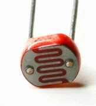

Sensor Fotosenssível - LDR
Um LDR, ou "Light Dependent Resistor" (resistor dependente de luz), é um tipo de Sensor Fotosensível que altera sua resistência elétrica de acordo com a intensidade da luz que incide sobre ele. Em ambientes com pouca luz, a resistência do LDR é alta, enquanto em ambientes bem iluminados, a resistência diminui. Algumas aplicações comuns incluem::
- Câmeras: Para ajustar a exposição com base nas condições de iluminação.
- Dispositivos de segurança: Para acionar alarmes ou luzes quando detectam mudanças na iluminação.
- Iluminação automática: Para ligar ou desligar luzes dos postes com base na presença de luz natural.
- Dispositivos eletrônicos: Como telas que ajustam o brilho automaticamente conforme a luz ambiente, como as de celular.

Foto de um LDR real
Foto de um LDR real